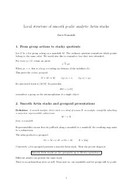
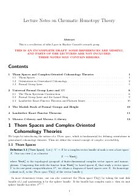

Talks
-
21 Dec 2026Condensed mathematics and a generalization of van Dantzig's theoremMidrasha on Groups, Weizmann Institute
-
16 Dec 2026Unstable SolidificationAGNT Seminar, Ben-Gurion University
-
2 Nov 2026
-
26 Oct 2026Local structure of smooth p-adic analytic Artin stacksHomotopy Theory Conference, Weizmann Institute

-
2025Lecture series on chromatic homotopy theoryResearch group of Shachar Carmeli, Weizmann Institute
